Student: Sazeda Sultana
Faculty Advisor: Professor Gloria Mark
School: University of California, Irvine
College: Donald Bren Information and Computer Science
Department: Informatics
Title
WHAT DESIGN FEATURES CAN MOTIVATE CHILDREN USE EDUCATIONAL TECHNOLOGIES AT A HIGHER RATE?
Abstract
Educational technologies can provide an optimum learning experience. Technologies or computers mediate almost every single interaction in these days. If it is possible to get a detailed understanding of how people are using computers day-to-day, it can inform technology design ("Gloria Mark"). In the future, we have to design systems for people the way they want, not the way we want them to be ("Design for How People Think (Don Norman)"). This study understood how younger people are using technology today and how they want the design of their technology to be. It obtained an understanding of what, how, and why younger people are using technologies in their daily life. We must support children in ways that are useful, effective, and meaningful for their needs (Druin 2). This research investigated qualities in existing technologies for children that meets their need and motivates them using it. Besides, it probed entertaining and educational technology use patterns in children and scrutinized features in them. Technology design features were analyzed in-depth by applying mix-methods with in-person surveys and observation. A mock-up of the design of future educational technology for children was created with the superior features largely adopting from entertaining technologies that children admired. The mock-up informs design for creating educational technology for children that children can be inspired to use at a higher level.
Research Procedures
Participants Information
The primary purpose of the research was to analyze the characteristics of technologies that can be implemented in educational technology to help children learn academic content more. It necessitated children to have a practical understanding of what educational technology is and know how to use essential technologies. To be able to use technology and participate in the surveys and observation effortlessly, the participants were selected in the range of ages 5 to 11. There were a total of 11 participants in the study.
Research Methodology Applied
The research was conducted after obtaining approval from the Institutional Review Board (IRB) at the University of California, Irvine. The study had a triangulation or multi-method approach to collect and evaluate data such as in-person surveys and observation.
Research Site
The research site was located at the University of California, Irvine Verano Place Housing, named Verano After School & Summer Program.
Research Schedule
The research was conducted from the beginning of January 2020 until the end of March 2020. The study was done from 4:30 pm to 5:45 pm from Monday to Thursday and from 2:00 pm to 5:54 pm on Friday. The in-person surveys about technology were conducted for 10 minutes to 30 minutes. The survey questions were read and clarified to children. For each observation session, one hour or more was spent on children's adored technology. Approximately 20 to 30 minutes was allocated to children's abhorred technology observation. During the observation sessions, notes were taken while children were using technologies.
Justification for the Research Procedures
The thought behind choosing in-person surveys instead of online surveys was, there were possibilities where children might not understand some questions. Thus, there was a likelihood that they could answer something that is not the expected answers to the questions. To avoid this situation, lead researcher sat with them, similar to an in-person interview. Every question was explained and clarified with the participants as many times as it was needed.
The purpose of conducting a field observation study on children was because we know that children are sincere in their feedback and comments concerning technology. Much of what they say may be in their actions and needs to be interpreted within the context of actual experiences (Druin 2). Field research could explore children's real experiences about the technologies they use.
Researchers tried to recognize the influence existing technologies have on child users through the role of users played by children so that future technologies can be changed, or future educational environments can be improved (Druin 3). Understanding which features of technology can inspire children to become a regular user of the technology, exploration through observation of children's technology usage behavior was essential for this research.
For the observation session, the technologies were chosen following the survey results. Minecraft was chosen as the entertaining technology to observe as it was rated as the most liked entertaining technology by children in the survey. Children were given an iPad to play with Minecraft since iPad was chosen as the highest-ranked device from where children use entertaining technology.
ABCya was chosen as the educational technology to observe as it was ranked as the most liked educational technology by children in the survey. Children were given a computer for observation sessions with ABCya since the computer is the device where children use educational technology the most, according to the survey data.
Data Analysis
Data analysis was done by comparing study findings regarding children's preferred and shunned entertaining and educational technology features. After data analysis was finalized, the last step of the research was to create a mock-up of a user interface of an educational website for children applying the research result.
Funding for the Research
This research was sponsored by the Undergraduate Research Opportunities Program (UROP) at the University of California, Irvine, under grant # GF11116.
Research Findings
Survey Findings
Features that Motivate Children to Use Entertaining Technology
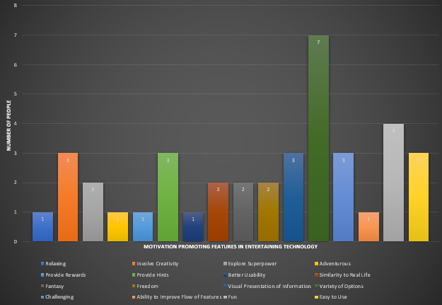Features that Motivate Children to Use Educational Technology
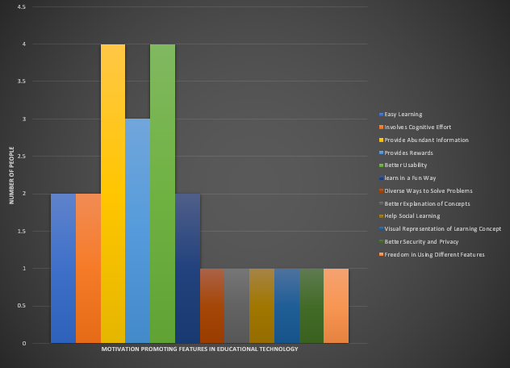Features that Discourage Children from Using Entertaining Technology
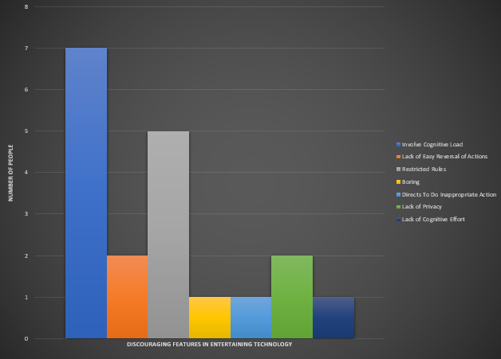Features that Discourage Children from Using Educational Technology
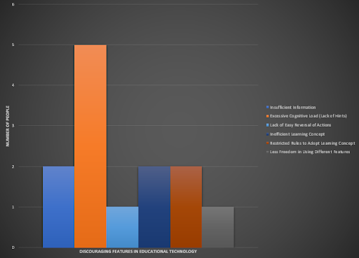Observation Findings
Entertaining Technology Observation Findings
In Minecraft, children always generated a new world. In survival mode, they bought staffs such as swords, construction materials like wood pixels to break stuff, torches to help see dark inside the cave. They kept breaking the things surrounding them to own the item. The rule of breaking things is – "whatever you break it, you own it." Children constantly broke items and owned them. There was always something in the surrounding where they can kill it and own it. Also, participants selected clues such as a map that helped them to tell where they currently are and directed them to move in the right direction. In the creative mode, they created gardens, crowns, or houses. Children were observed to choose survival mode the most, where they had a significant amount of helper or clues that helped them continue or win the game. Also, in survival mode, children had the privilege to own the stuff they killed.
Educational technology observation findings
Children mostly chose poping words, word clouds, holidays, puzzles, and number games in ABCya. It was observed that they kept changing games while they were using the word or pattern games and were observed having difficulty playing them. Whereas when they chose creative games such as painting or making pizza, etc. where they created things according to their determination, they continued it for a longer time.
Implictions
This study investigated what features inspire children to use technology. The research showed promising results. Participants pointed out to every small component on technologies that they experienced in their life that drove them to use or make them disheartened towards them. This study recommends the design of educational technology with the features that children have declared as motivation promoters for their technology usage. Below is a mock-up of the redesigned educational website ABCYa designed with the research findings, including all the features that children affirmed to be enthusiasm booster. The mock-up was created with the wireframing and prototyping tool Axure.
User Flow 1
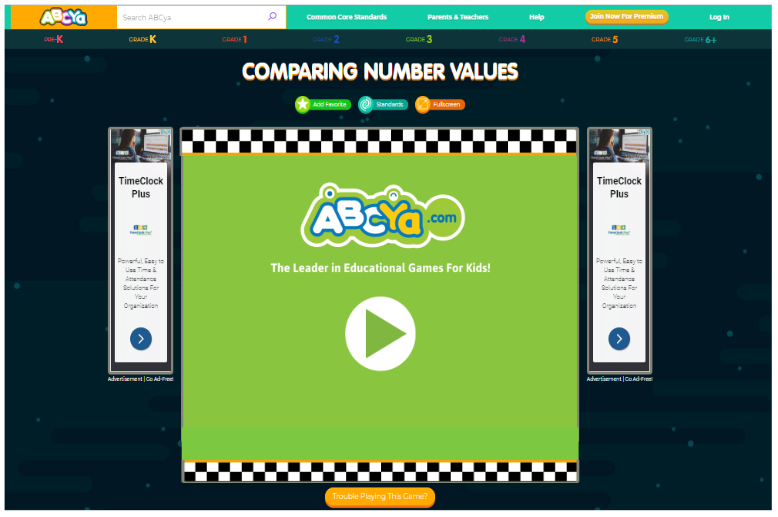User Flow 2
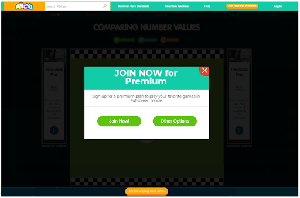User Flow 3
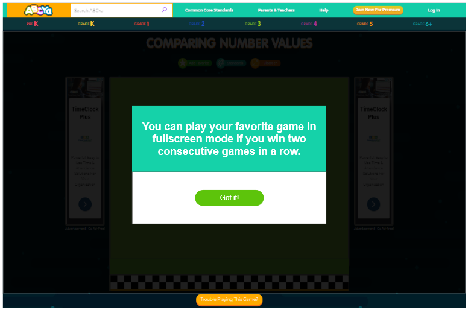User Flow 4

User Flow 5
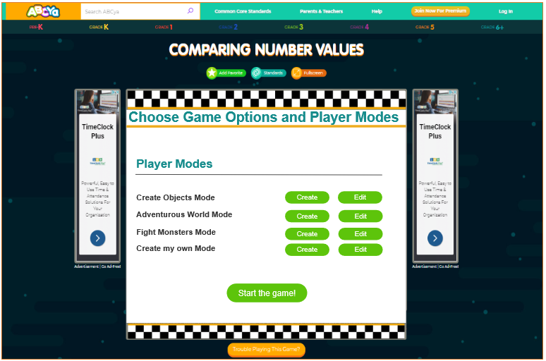User Flow 6
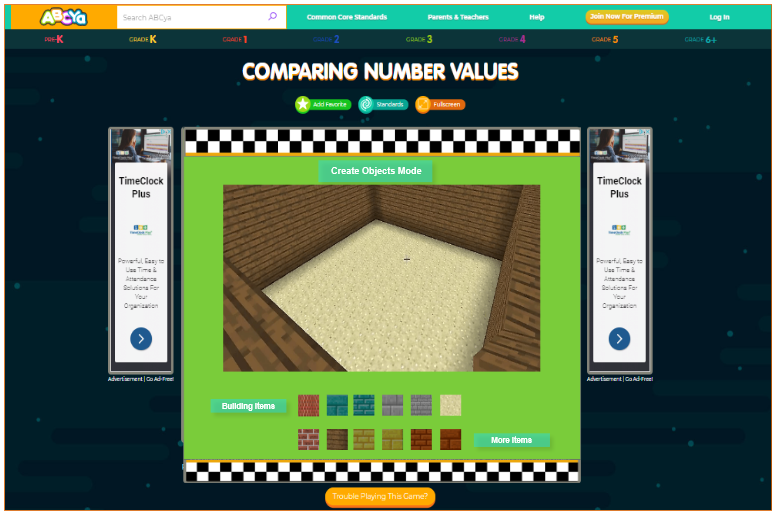User Flow 7
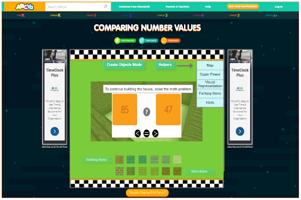User Flow 8
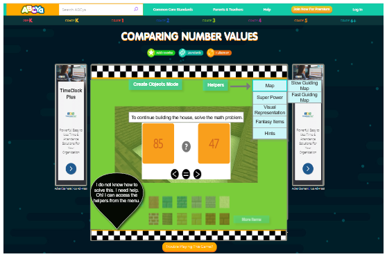User Flow 9
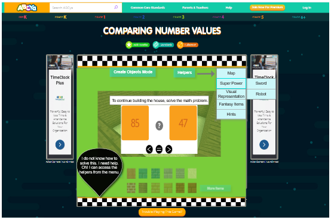User Flow 10
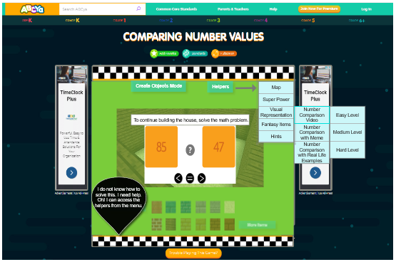User Flow 11
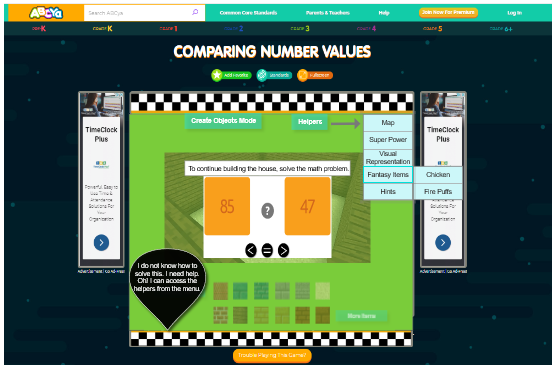User Flow 12
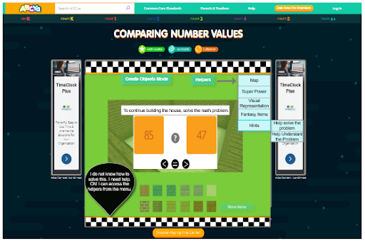User Flow 13
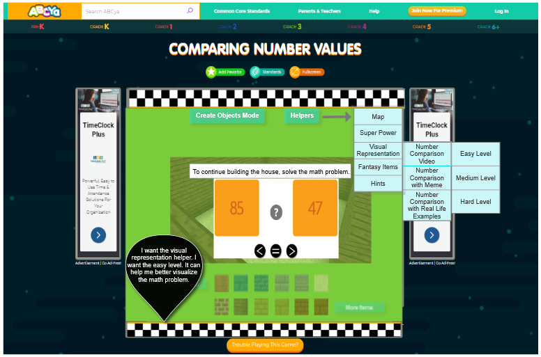User Flow 14
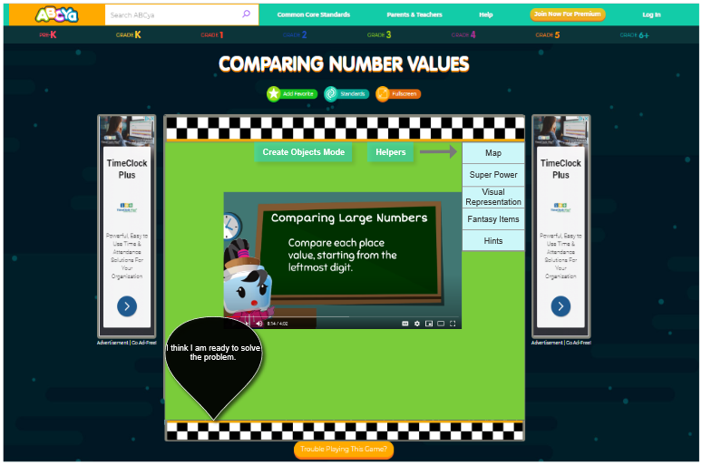User Flow 15
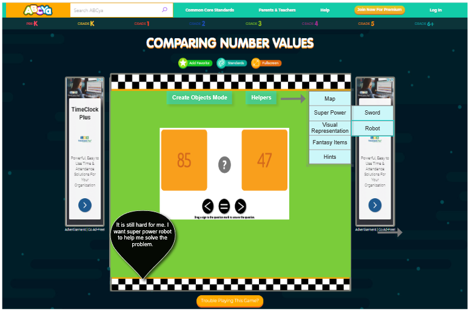User Flow 16
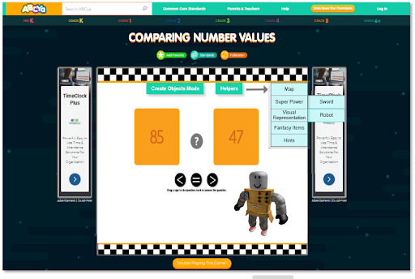User Flow 17
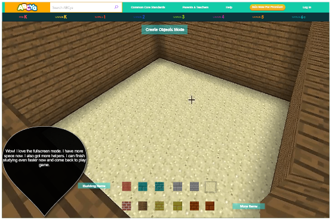Works Cited
"Design for How People Think (Don Norman)." YouTube, uploaded by NNgroup , 13 Oct 2017, https://www.youtube.com/watch?v=vdDwe0bM4U4.
"Gloria Mark." www.informatics.uci.edu, 25 Sept. 2014, https://www.informatics.uci.edu/explore/faculty-profiles/gloria-mark/.
Druin, Allison. "The role of children in the design of new technology." 2002. PDF.
Druin, Allison. "The role of children in the design of new technology." Behaviour & Information Technology 21 (2002): 1 - 25.
Druin, Allison. "Cooperative inquiry: developing new technologies for children with children." CHI '99 (1999).